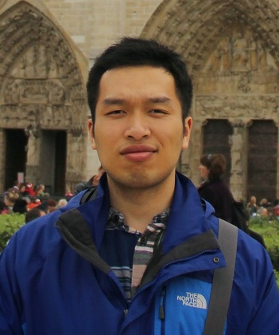

iGraphics Lab @ NUDT
iGraphics Lab targets top-tier Graphics and Vision research at the School of Computer, National University of Defense Technology. The group is led by Kai Xu. We are proud of our six PhD students (some of them are joint students visiting oversea universities) and four Master students. Several excellent former students are still in close collaboration with our group. A one-sentence summary of our research goal is that we try to close the loop of acquisition, processing, understanding and generation of 3D geometric data with data-driven approach (please refer to this survey for the concept of 'data-driven loop').
Our group is actively seeking for self-motivated and well-trained students to join. If you are interested, please send email to: kevin.kai.xu [at] gmail.com
Research Interests:
Geometry Processing, Geometric Modeling, Data-Driven Shape Analysis and Modeling, 3D Vision, Autonomous 3D Sensing, Robot Perception, etc.
Faculties:
|  | ||
Chenyang Zhu |
Renjiao Yi |
Jun Li |
Data-Driven Shape Analysis and Modeling |
Computer Vision and AI |
3D Vision, Data-Driven Shape Analysis |
PhD, Simon Fraser University |
PhD, Simon Fraser University |
PhD, University of Bonn |
PhD Students:

Master Students:
Yunzhe Xiao |
Dianyuan Wu |
Yang Yu |
Qiangqiang Shen |
3D Vision |
3D Vision |
Robot Navigation |
Robot Navigation |
Started 2017 |
Started 2017 |
Started 2018 |
Started 2016 |
Former Students in Collaboration: